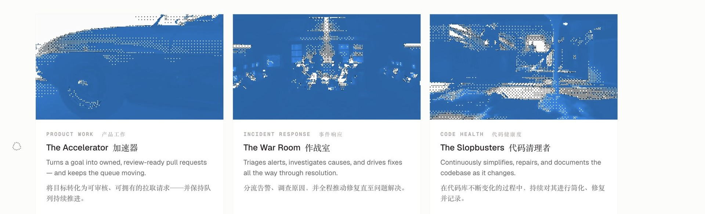
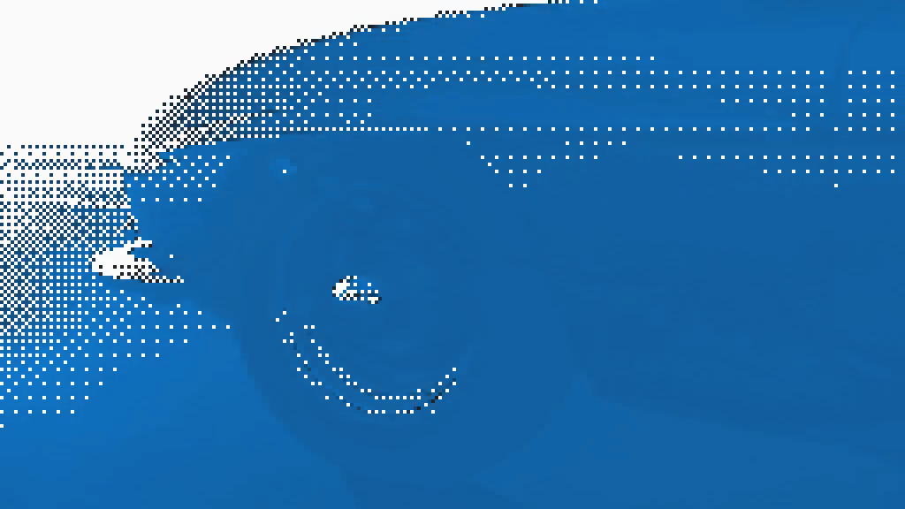
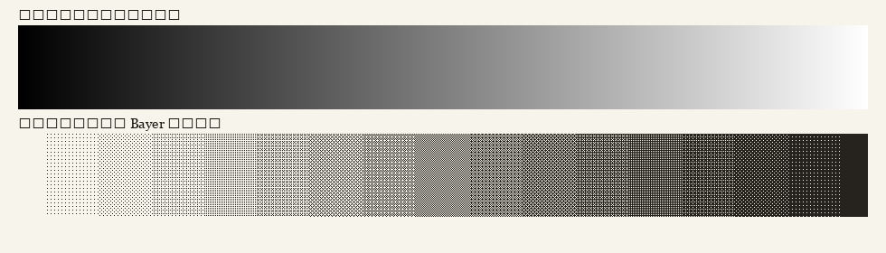
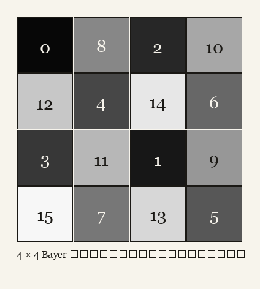
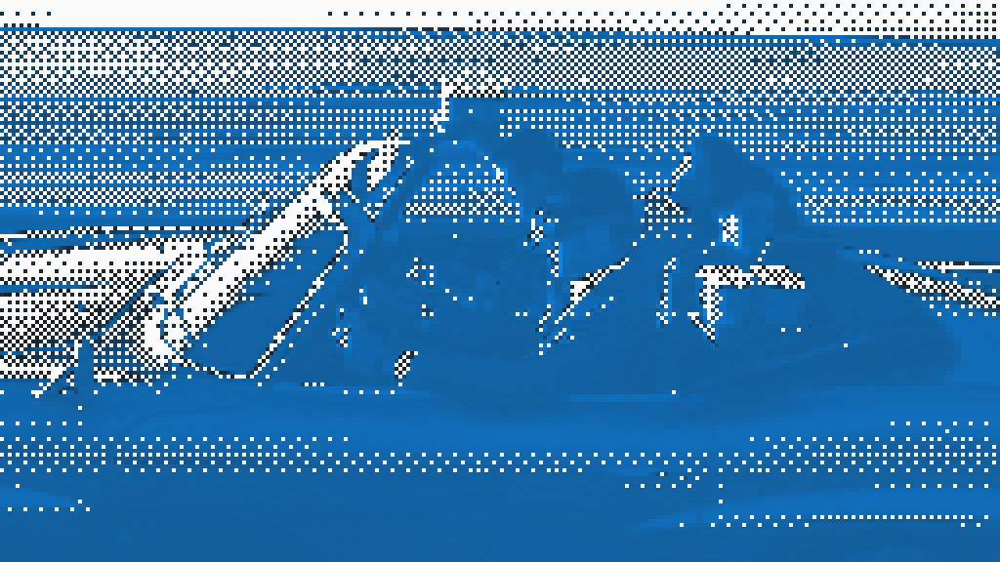
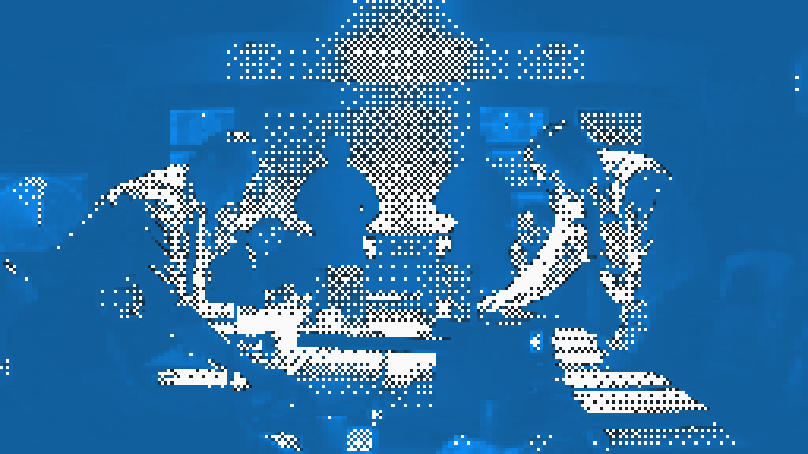
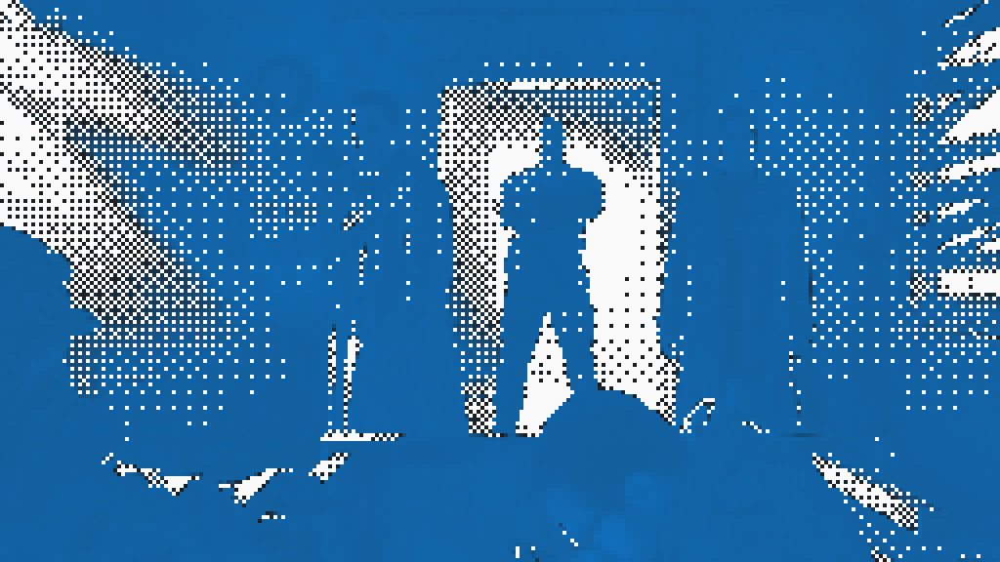

一份不用 Three.js 的印刷术。样本来自 auto.sh。
2026-08-17 · 对着要做标题屏的人写，不是对着要写综述的人写
打开 auto.sh，标题后面那层慢慢挪动的灰点，不是 3D 场景，也不是给照片套了滤镜。它是报纸的老办法：纸上只有「有墨」和「没墨」，灰色靠点的疏密骗眼睛。上面这块就是同一台小机器，嵌在这页里。你调格子和疏密，看见的变化就是以后游戏标题屏上的变化。
图 1 和头顶那层活场是亲戚，不是同一个车间。活场要跟时间走，所以每帧现算。车灯、作战室、街道要像一张被印坏的照片，所以先离线打成双色，再压成 MP4。网页上没有再套 filter。1


印刷机没有「浅灰」这个墨盒。它有纸，有黑墨。要一片天空，工人用很多小黑点；要一片夜，点挤在一起。离远一点，眼睛自己合成灰色。游戏里用同一招：每个格子要么亮，要么灭。没有半透明雾，没有粒子。

印章叫 Bayer 矩阵。别被名字吓到。它就是一块 4 格乘 4 格的图章，每格写着「亮到什么程度才许打点」。数字小的格子先亮，数字大的格子要很亮才亮。整张图用同一块图章反复盖，网点就整齐，不会变成沙子。

第一种车间做雾。一张全屏大三角形，上面跑一段着色器：噪声慢慢往左漂，再拿图 4 的印章盖下去。鼠标靠近时局部挤一下。这就是头顶那层。
第二种车间做地点。把实拍或三维素材收成亮度，盖同一块印章，把「有点」涂成一个颜色，「没点」留纸色。输出一张图，或一段不超过 8 秒的循环视频。图 1 那三张走的是这条线。



为什么不把视频也丢进着色器里实时打点？因为车要像车。照片一旦进入「我认得出这是什么」的程度，就该离线烤。雾认不出物体，才值得每帧算。
活场铺满窗口。游戏名、按钮、血条放在实色层上，不要让字也被打成点。关卡选单放图 5 那种烤好的地点图。角色头像用小图，CSS 写 image-rendering: pixelated，禁止平滑放大。
颜色只留三样：纸、墨、一个信号色。信号色跟这局游戏走，不要从奕枢落地页抄蜡笔红。这页默认用图 1 里那支蓝，只是因为样本是它。
不要把它印在奕枢拼贴落地页上，不要印在暖纸阅读器上，不要印在要读数字的工具台上。那些地方的字需要干净。胶片颗粒和网点选一种脏法，不要叠。
canvas，getContext("webgl", { antialias: false })。[-1,-1, 3,-1, -1,3]。这是一块盖住屏幕的大三角形。cellCount 切格子 → 噪声往左漂 → 用图 4 的印章做 step → 灭的格子涂纸色，亮的涂墨或信号色。标题场可从这些数起：cellCount = 240，intensity = 0.48，accentBoost = 1.1（auto.sh 用到 1.9，偏吵，游戏里收一点）。内嵌小卡把 intensity 降到 0.3，并关掉鼠标。
const VERT = `
attribute vec2 a_position;
void main() { gl_Position = vec4(a_position, 0.0, 1.0); }
`;
const FRAG = `
precision highp float;
uniform vec2 u_resolution;
uniform float u_time, u_intensity, u_cellCount, u_accentBoost;
uniform vec2 u_mouse;
uniform vec3 u_accent, u_background, u_ink;
float bayer4(vec2 p) {
int x = int(mod(p.x, 4.0));
int y = int(mod(p.y, 4.0));
int i = x + y * 4;
float m = 0.0;
if (i==0)m=0.0; else if(i==1)m=8.0; else if(i==2)m=2.0; else if(i==3)m=10.0;
else if(i==4)m=12.0; else if(i==5)m=4.0; else if(i==6)m=14.0; else if(i==7)m=6.0;
else if(i==8)m=3.0; else if(i==9)m=11.0; else if(i==10)m=1.0; else if(i==11)m=9.0;
else if(i==12)m=15.0; else if(i==13)m=7.0; else if(i==14)m=13.0; else m=5.0;
return (m + 0.5) / 16.0;
}
vec2 hash2(vec2 p) {
p = vec2(dot(p, vec2(127.1,311.7)), dot(p, vec2(269.5,183.3)));
return -1.0 + 2.0 * fract(sin(p) * 43758.5453123);
}
float noise(vec2 p) {
vec2 i = floor(p), f = fract(p), u = f*f*(3.0-2.0*f);
return mix(
mix(dot(hash2(i), f), dot(hash2(i+vec2(1,0)), f-vec2(1,0)), u.x),
mix(dot(hash2(i+vec2(0,1)), f-vec2(0,1)), dot(hash2(i+vec2(1,1)), f-vec2(1,1)), u.x), u.y);
}
float fbm(vec2 p) {
float v = 0.0, a = 0.5;
for (int i = 0; i < 4; i++) { v += a * noise(p); p *= 2.03; a *= 0.5; }
return v;
}
void main() {
float cellSize = max(2.0, floor(u_resolution.y / u_cellCount));
vec2 cell = floor(gl_FragCoord.xy / cellSize);
vec2 uv = (cell * cellSize + cellSize * 0.5) / u_resolution;
float aspect = u_resolution.x / u_resolution.y;
vec2 p = vec2(uv.x * aspect, uv.y);
vec2 mouse = vec2(u_mouse.x * aspect, u_mouse.y);
float bend = exp(-length(p - mouse) * 3.2);
vec2 flow = p * vec2(1.3, 2.1);
flow.x -= u_time * 0.08;
flow += bend * 0.28 * vec2(cos(u_time * 0.7), sin(u_time * 0.9));
float v = fbm(flow + fbm(flow * 1.4 + u_time * 0.025) * 1.1) * 0.5 + 0.5;
float shade = smoothstep(0.22, 0.74, v);
shade = shade * (0.35 + shade * 0.65);
float laneY = floor(uv.y * 9.0);
float lane = fract(uv.y * 9.0);
float laneCenter = smoothstep(0.25, 0.5, lane) * smoothstep(0.75, 0.5, lane);
float pulses = laneCenter * smoothstep(0.62, 0.95, noise(vec2(uv.x * 2.2 - u_time * 0.38, laneY * 13.7)));
shade = max(shade, pulses * 0.85) + bend * 0.1;
shade *= u_intensity;
float on = step(bayer4(cell), shade);
float accentMix = (pulses * 1.8 + bend * 0.45 + smoothstep(0.45, 0.85, shade) * 0.85) * u_accentBoost;
vec3 dotc = mix(u_ink, u_accent, clamp(accentMix, 0.0, 1.0));
gl_FragColor = vec4(mix(u_background, dotc, on), 1.0);
}
`;
1. 2026-08-17 对着 https://www.auto.sh/ 拆过活着色器和资源。组件名 DitherField。Hero：intensity 0.48，cellCount 260，accentBoost 1.9。三张卡是 /teams/backdrops/*.mp4，不是 canvas。